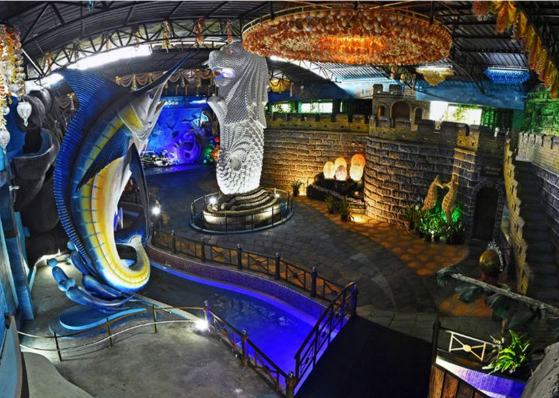
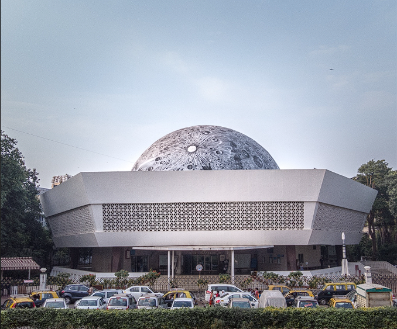

Mukesh Art Gallery Museum - JaipurMukesh Art Gallery was born out of a vision to patronize Location : J.L.N Marg 55, Sunder Nagar, Girdhar Marg, Malviya Nagar, Jaipur, Rajasthan, Jaipur (Map) Timing : 10:00 AM - 6:00 PM |
Jantar Mantar museum - JaipurThe Jantar Mantar, Jaipur is a collection of 19 astronomical Location : Sansad Marg, Connaught Place, New Delhi, Delhi 110001 Timing : 6:00 AM - 6:00 PM |
Albert Hall Museum - JaipurSituated in the Ram Niwas Garden of Jaipur, the Albert Hall Museum Location : Ram Niwas Garden, Ashok Nagar, Jaipur, Rajasthan, 302001, India awe-inspiring, exquisitely framed paintings in different styles. Timing : 9:00 AM - 5:00 PM |
|---|

India Seashell Museum - ChennaiAn eminent tourist attraction in Mahabalipuram and one of its Location : 191/1A2, Kalpakkam Road, Mahabalipuram, Tamil Nadu 603104 Timing : 8:00 AM - 8:00 PM |
Shivaji Maharaj Museum - South MumbaiChhatrapati Shivaji Maharaj Vastu Sangrahalaya, (CSMVS) originally Location : Mahatma Gandhi Road, Fort,Mumbai-400 023, Maharashtra, India. Timing : 10:15 A.M to 6:00 P.M |

Nehru Planterium Museum - DelhiNehru Planetariums are the five planetariums in India, Location : The Nehru Planetarium in New Delhi is situated on the grounds of Teen Murti Bhavan. Timimg : 11:00 A.M to 5:00 P.M |
|---|